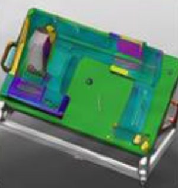
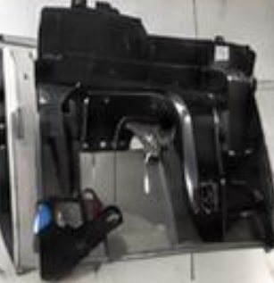
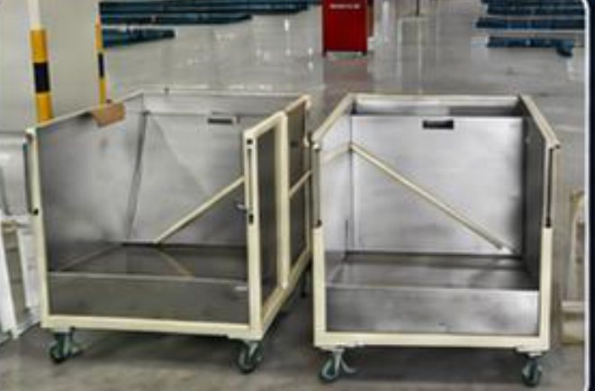
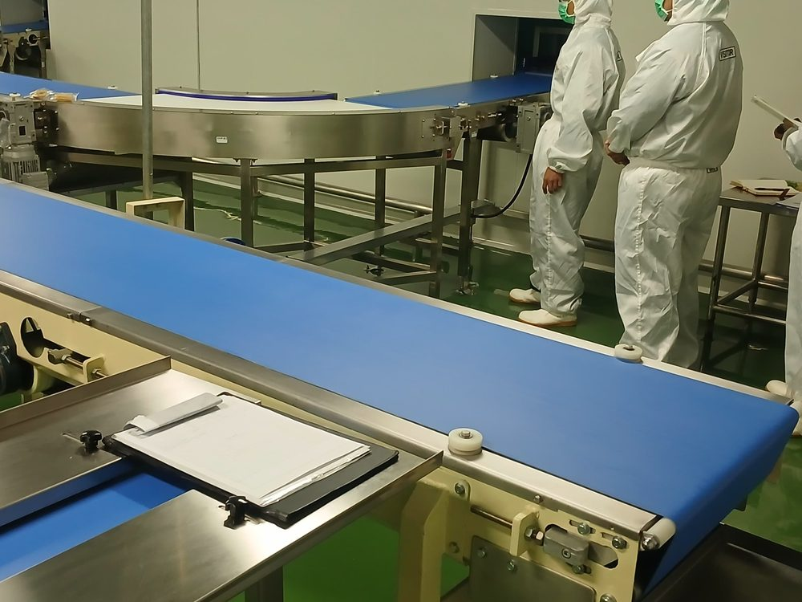

AGV System
Automated guided vehicle untuk transfer material dan troli komponen secara terjadwal antar-workstation, dengan panduan magnetik atau QR.
Perancangan dan pembuatan peralatan produksi, integrasi otomasi, serta modifikasi fasilitas sesuai kebutuhan proses manufaktur.
Alat bantu untuk memosisikan dan menahan komponen selama proses produksi dan perakitan.
Kontur part dan titik referensinya menjadi acuan desain 3D. Targetnya clamping yang akurat, posisi yang berulang konsisten di setiap siklus, dan deformasi seminimal mungkin agar tidak muncul cacat di lini.


Integrasi sistem untuk proses pengecatan, pemindahan material, dan pengambilan komponen di area produksi.
Automated guided vehicle untuk transfer material dan troli komponen secara terjadwal antar-workstation, dengan panduan magnetik atau QR.


Robot multi-axis untuk pelapisan cat yang seragam, overspray lebih sedikit, dan paparan operator yang lebih rendah. Dikendalikan PLC dan teaching pendant.
 Before
Before After
AfterIndikator LED di rak atau meja perakitan memandu pengambilan part dan mencegah salah ambil, terhubung ke panel HMI.
Pemesinan komponen serta pembuatan perlengkapan industri berdasarkan fungsi dan spesifikasi penggunaan.
Palet baja lipat untuk penumpukan komponen yang aman dan hemat ruang saat kosong.
Troli custom dengan bantalan pelindung dan roda berpengunci untuk panel bodi dan pipa.
Kabinet perkakas dengan laci bersekat untuk tool holder, reamer, dan alat ukur.





Penyesuaian jalur pemindahan produk dan fasilitas pendukung sesuai kebutuhan operasional pabrik.
Modifikasi dirancang dengan mengutamakan K3 dan waktu siklus: dari jalur bypass conveyor saat perbaikan lini, sampai tangga akses operator yang ergonomis.
Mengalihkan aliran barang saat perawatan tanpa menghentikan seluruh lini produksi.
Platform pijakan, handrail, dan pijakan anti-slip sesuai postur kerja operator.
Kirim gambar teknik, sampel, atau ringkasan masalah di lini. Tim engineering kami meninjau, lalu menjadwalkan survei ke pabrik bila diperlukan.